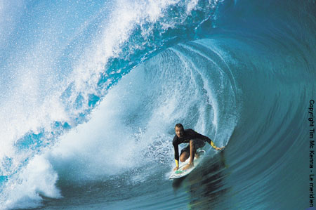

Sport.it - Homepage. Notizie, dirette, video ed eventi sportivi in tempo reale
- Home - CUS Catania
Da Taurus Sport puoi trovare le ultime collezioni delle migliori marche di abbigliamento sportivo e attrezzature sportive professionali. Taurus Sport è a Lecco, Erba e Carate Brianza - Scarpe, abbigliamento e attrezzature sportive - Tecnica Sport
ENCI Sport è il sito ufficiale per gli sport dell'ENCI - Ente Nazionale Cinofilia Italiana. Agility dog e obedience. Calendario gare, ultimi risultati e aggiornamenti. - Sky Sport - Wikipedia
CUS Catania è il Centro Universitario Sportivo dell'Ateneo catanese. È stato fondato l'8 luglio 1947. Il gruppo sportivo universitario etneo - Negozio di sport a Torino: abbigliamento, scarpe ...
Anche se l'accezione comune del termine solitamente individua quali sport acquatici solo quelli praticati in piscina (nuoto, nuoto di fondo, nuoto sincronizzato, tuffi, tuffi dalle grandi altezze, pallanuoto e masters, cioè quelli governati dalla FINA), vanno a tutti gli effetti considerati tali anche gli sport remieri (canottaggio, canoa/kayak e canoa fluviale, Dragonboat, Rafting) e quelli ... - Diretta Radio Sport
Centro Sport Palladio Via Cavalieri di Vittorio Veneto, 29 36100 Vicenza VI Tel: 0444-963466 info@centrosportpalladio.it; Contattaci. Accetto il trattamento della privacy (leggi l'informativa) Invia Richiesta × Iscriviti alla newsletter. Centro Sport Palladio ... - HOME | SPORTITALIA
Alle ore 19.00 di lunedì 12 aprile si gioca la partita Chievo-Pisa, gara valevole per … Read More » - Cus Firenze
JOLLY SPORT s.r.l. P. IVA: 06282750014. Via Nizza 51/53, 10125 Torino (TO) Tel: 011 6507553. Fax: 011 6508036. Email: servizio-clienti@jollysport.it - 2T Sport srl | Abbigliamento Sportivo Personalizzato e su ...
Sport Atalanta Foppapedretti Notizie di Bergamo e approfondimenti di cronaca, politica, economia e sport. News Bergamo e provincia in tempo reale. - Sito ufficiale | ENCI Sport
Sport.it è il sito che racconta in diretta i principali eventi sportivi e che raccoglie consigli su prodotti e abbonamenti per chi ama lo sport. Al fine di fornire ai suoi lettori spunti di riflessione utili al loro shopping online sono pubblicati articoli dedicati ai principali sport. - Assindustria Sport | Società Sportiva dilettantistica a ...
SNAPS - OLTRE LO SPORT Hai perso la puntata di SNAPS - OLTRE LO SPORT? Nessun problema, riguarda la puntata integrale nella nostra sezione on demand
Chi siamo Come contattarci Seguici su Facebook
Home Calcio Motori Basket Tennis Volley Atletica Ciclismo Arti Marziali Boxe Nuoto Rugby Video LIVE Home Calcio Motori Basket Tennis Volley Atletica Ciclismo Arti Marziali Boxe Nuoto Rugby Video LIVE Calcio
Dietrofront Uefa: addio campionati, sì alla Champions in estate con Final Eight in unica sede
Spadafora: “I club potrebbero chiedere lo stop della A”. Dybala ancora positivo
“The English Game”: le origini del calcio raccontate su Netflix
I nostri consigli: 10 libri sullo sport per trascorrere al meglio i giorni senza gare e partite
I nostri consigli: 10 film sullo sport da vedere durante la quarantena
VIDEO Coronavirus, i medici cantano l’inno del Liverpool in ospedale: Klopp si commuove
VIDEO Il messaggio di Nadal agli spagnoli: ”Ci lasceremo alle spalle questo bruttissimo momento”
“The Last Dance”: la serie tv di Netflix su Michael Jordan e il leggendario team dei Chicago Bulls degli anni ‘90
Calcio
CalcioLa Ligue 1 finisce qui. Quello francese è il primo dei 5 grandi...
Primi effetti definitivi del Coronavirus a livello sportivo, visto che uno dei cinque principali...
CalcioAllenamenti dal 18 maggio, ma Spadafora frena: “Per...
Si torna in campo, anche se solo per allenarsi. Il nuovo decreto del presidente del Consiglio...
CalcioLa lettera di 17 medici di A alla Figc: “Non possiamo...
A Berlino, nella finale del Mondiale 2006, in panchina c’era anche Enrico Castellacci, attuale...
CalcioJuventus, il centrocampo cambia (sognando Pogba). Psg e...
Un punto dolente, nonostante il primo posto. Il centrocampo della Juventus non è mai stato così...
Basket
Basket“The Last Dance”: la serie tv di Netflix su Michael...
Michael Jordan sbarca su Netflix, per intrattenere con le sue prodezze milioni di appassionati a...
BasketBasket, Serie A conclusa a causa del Coronavirus...
BasketNba sospesa, Rudy Gobert degli Utah Jazz primo...
Tennis
TennisDal 4 maggio la ripresa degli sport individuali: ecco come...
Un ultimo Dpcm per far ripartire la macchina sportiva. Gradualmente e per comparti, così come si...
TennisTra i palazzi, con reti artigianali, usando il lancia...
TennisLa fase 2 del tennis: porte chiuse e spogliatoi...
Motori
MotoriMotoGp, rinviate anche le gare del Mugello e in Catalogna...
A causa della pandemia legata al Coronavirus il Motomondiale perde altri due Gp, Mugello e...
MotoriCancellato il Gp d’Australia: anche la F1 si ferma per il...
Il Coronavirus stoppa anche la nuova stagione di Formula 1. Il Gp d’Australia, in programma...
MotoriF1, tecnico della McLaren ha il Covid-19 e la scuderia si ritira...
Gli effetti del contagio da Coronavirus si fanno sentire, sempre di più. Nell’ambito sportivo, ogni...
MotoriF1, in Bahrain si correrà a porte chiuse. Confermata la partenza...
Dopo lo stop al Gp della Cina, in programma ad aprile e verso la cancellazione dal calendario della...
Volley
VolleyCoronavirus, si ferma anche il campionato A1 femminile di volley
L’emergenza Coronavirus ferma anche la pallavolo. E lo scudetto della stagione 2019/2020 non...
VolleyVolley, annuncio a sorpresa: Francesca Piccinini torna a giocare...
La regina ricomincia la storia d’amore con il suo principe azzurro. Non un uomo in carne ed ossa...
Rugby
RugbySei Nazioni, anche la Scozia passeggia sull’Italia: a Roma...
La Scozia ha battuto l’Italia 17-0 in una partita della terza giornata del Sei Nazioni. Per...
RugbyItalia ancora sconfitta nel Sei Nazioni, la Francia passa 35-22
Un passo avanti rispetto al disastroso esordio contro il Galles, ma ancora un ko. L’Italia...
Ciclismo
CiclismoAddio a Poulidor, l’eterno secondo del ciclismo francese...
Addio Raymond Poulidor, eterno secondo del ciclismo d’altri tempi. Se n’è andato a 83...
CiclismoGiro d’Italia 2020, si parte da Budapest e si...
CiclismoCiclismo, Cassani: “La morte di Marco Pantani è...
Arti marziali e boxe
ArcoPinto Arti Marziali e BoxeWrestlove, l’amore di una coppia italiana di wrestler...
Una storia d’amore vissuta sul ring, tra pugni, calci e salti acrobatici. Ma pur sempre una storia...
Arti Marziali e BoxeBoxe, Scardina conserva il titolo dei supermedi e fa...
Matteo Innocenti/Opi Since 82 Arti Marziali e BoxeBoxe, a Milano Scardina difende il titolo dei...
Nuoto
NuotoOrfani dell’ultima gara. A causa del Coronavirus molti...
28 maggio 2017, Roma. Lo stadio Olimpico pieno per Francesco Totti che dà l’addio al calcio. Urla...
Atletica
AtleticaTristezza e nuovi programmi, gli atleti salutano le Olimpiadi...
Tokyo 2020 si terrà nel 2021, pur conservando lo stesso nome per questioni di sponsorizzazione e di...
Video Recenti
Lippi racconta a Cannavaro come scelse i rigoristi del Mondiale 2006 Coronavirus, Ibrahimovic si allena in Svezia con la squadra acquistata nel 2019 Il figlio di Schwarzenegger mostra i muscoli ed è identico al padre Coronavirus, nella video simulazione i rischi per i runner che corrono in scia Coronavirus, i medici cantano l'inno del Liverpool in ospedale: Klopp si commuoveArticoli più visti
Sport.it è il sito che racconta in diretta i principali eventi sportivi e che raccoglie consigli su prodotti e abbonamenti per chi ama lo sport. Al fine di fornire ai suoi lettori spunti di riflessione utili al loro shopping online sono pubblicati articoli dedicati ai principali sport. Lungi dall’avere pretese di esaustività, Sport.it vuole essere una guida alla scelta semplice, veloce e comprensibile. Disponibile 24 ore su 24, 7 giorni su 7. Per tutti.
"Sport.it è un sito del Gruppo editoriale GEDI al quale appartengono alcune delle più grandi testate Italiane"
Sport.it sceglie e raccomanda in maniera indipendente prodotti e servizi che si possono acquistare online. Ogni volta che viene fatto un acquisto attraverso uno dei link presenti nel testo, Sport.it riceve una commissione senza alcuna variazione del prezzo finale.
Calcio Motori Basket Tennis Arti Marziali e Boxe Rugby Volley Atletica Fitness Ciclismo Nuoto Chi siamo Come contattarci Cookie policy PrivacyCopyright © 2019 GEDI Digital S.r.l. Tutti i diritti riservati
Chi siamo Come contattarci